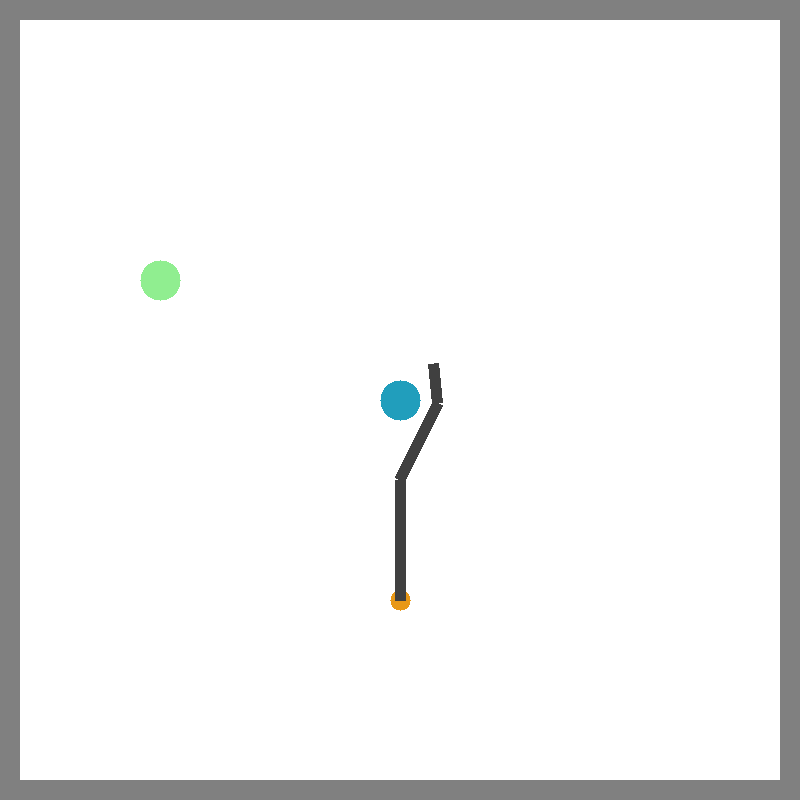
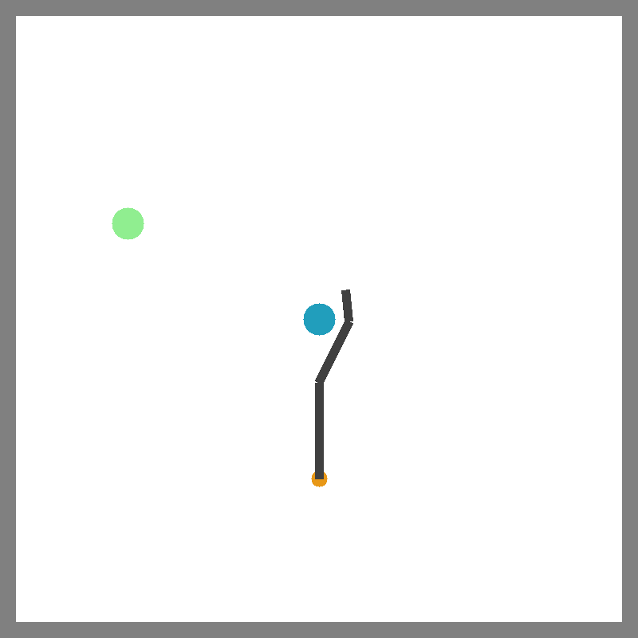
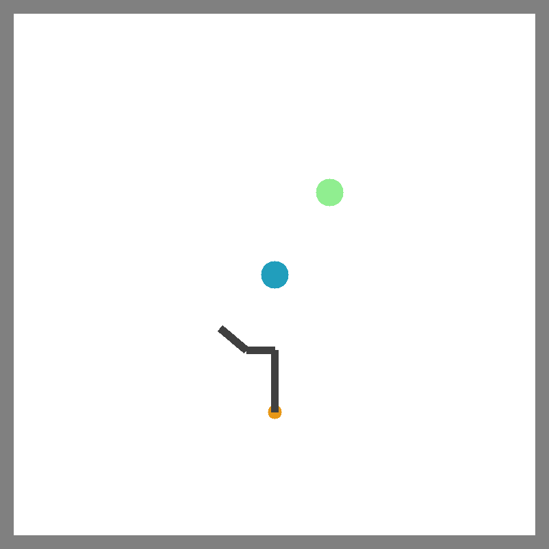
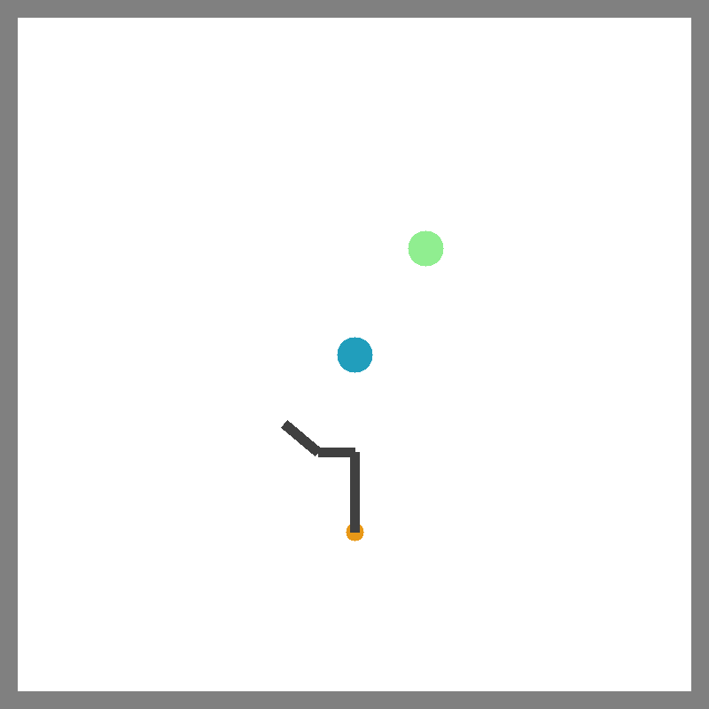

Tasks

Pushing
Ball Catching

When limited by their own morphologies, humans and some species of animals have the remarkable ability to use objects from the environment towards accomplishing otherwise impossible tasks. Embodied agents might similarly unlock a range of additional capabilities through tool use. Recent techniques for jointly optimizing morphology and control via deep learning output effective solutions for tasks such as designing locomotion agents. But while designing a single-goal morphology makes sense for locomotion, manipulation involves a wide variety of strategies depending on the task goals at hand. An agent must be capable of rapidly prototyping specialized tools for different goals.
Therefore, we propose the idea of learning a designer policy, rather than a single design. A designer policy is conditioned on task goals, and outputs a design for a tool that helps solve the task. A design-agnostic controller policy can then perform manipulation using these tools.
In this work, we introduce a reinforcement learning framework for learning these policies. Through simulated manipulation tasks, we show that this framework is more sample efficient than black-box optimization methods in multi-goal settings. It can also perform zero-shot interpolation or finetuning to tackle previously unseen goals. Finally, we demonstrate that our framework allows tradeoffs between the complexity of design and control policies when required by practical constraints.


 



 
